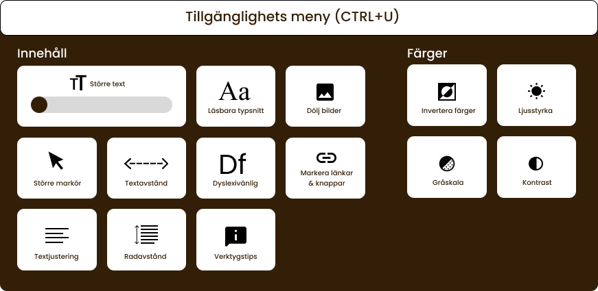

Accessibility menu
The accessibility menu was designed to give users direct control over their browsing experience, offering options such as increased text size, dyslexia-friendly mode, adjusted spacing, high-contrast modes, grayscale, and the ability to hide images for improved focus. Although not fully functional in the prototype, the menu illustrates how users with different needs can customise the interface to support readability, comfort, and reduced cognitive load.
